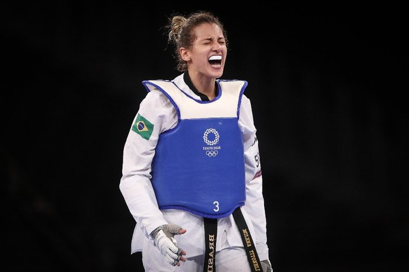

Taekwondo🥋
Minha História
Comecei o Tekwondo aos 8 anos de idade, em 2016.
Comecei a competir em 2022.
Ano passado eu topei ir ao um campeonato:O Super Campeonato Brasileiro 2023
Eu treinava o tempo todo, ansiedade a mil... .
Chegando a hora da luta,eu morrendo de ansiedade, mestre como sempre me fazendo dar risada.
A emoção de ter tornado a Primeira Vilhenense a ganhar um Ouro em Brasileiro de taekwondo.
Depois de 8 anos finalmente ela veio. A grandiosa faixa Preta.
Na copa Do Brasil lutei pela primeira vez com a Faixa Preta.
O taekwondo me deu oportunidades incrÃveis, como:
- Conhecer cidades novas
- Ji-parana
- Cacoal
- Porto Velho
- Fortaleza
- Rio de Janeiro
- BrasÃlia
- E é claro pessoas novas e Medalhas

Participação das Mulheres no esporte
A história da participação das mulheres no esporte é longa e cheia de desafios.
As mulheres estão descobrindo que a prática de esportes oferece uma saÃda poderosa para se expressarem, superarem seus limites e aumentarem sua autoestima. Historicamente, as mulheres foram desencorajadas a participar de esportes, seja por restrições culturais ou por medo de desafiar os padrões sociais vigentes. Isso significava que as mulheres eram excluÃdas de diversas atividades esportivas, limitadas ao lugar de espectadoras. Somente recentemente as mulheres passaram a ser vistas como atletas, valorizadas por suas habilidades e conquistas esportivas.
Milena Titoneli
Milena Titoneli é mais uma das atletas brasileiras que atualiza a definição da expressão “lute como uma garota”. Jovem mas já com feitos inéditos no esporte, Milena vive no limiar entre promessa e realidade. Nos últimos anos, tornou-se uma força no taekwondo e se consolidou como uma chance de medalha nas OlimpÃadas. Milena Titoneli é uma lutadora profissional de taekwondo natural de São Paulo. Nascida no dia 6 de agosto de 1998, faz parte da Seleção Brasileira desde 2016 e desde 2014 treina com a Two Brothers Team, equipe da Secretaria de Esporte, Lazer e Juvetude (SELJ) da cidade de São Caetano. Milena, que compete na categoria 67kg, é considerada uma revelação no taekwondo mas já é uma atleta marcada na história do esporte. Foi, por exemplo, a primeira mulher a conquistar uma medalha de ouro da modalidade nos Jogos Pan-Americanos. Antes, já tinha sido a primeira classificada para os Jogos OlÃmpicos da Juventude. A lutadora busca agora ser a primeira medalhista de ouro nas OlimpÃadas.
- Medalhas Conquistadas
- 🥇 Pan Am Games.
- 🥇 South Am Games.
- 🥉🥉 World Championship.
- 🥇🥇🥉 Pan Am Games.
- 🖠Tokyo Olympic Games.
- 🆠Atleta Pódio.